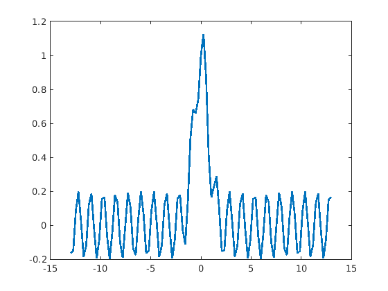
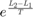
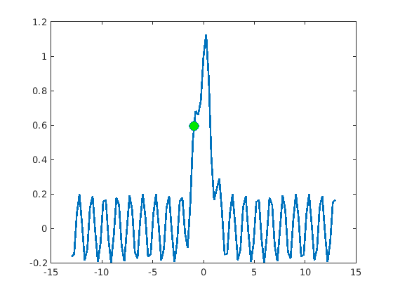

Simulated Annealing
This algorithm is a little trickier to understand, but it is much more general and robust. To avoid getting stuck in a local optimum, simulated annealing allows the hiker to take steps in the wrong direction with some probability. Let's look at that ugly function again.
clear
objective = @(x) exp(-x.^2) + sin(x*5) / 5;
xax = linspace(-13, 13, 101);
plot(xax, objective(xax), 'linewidth', 2)
 Ew.
We start at the same point
best_guess = -1.5; % At a minimum, simulated annealing needs a threshold above which it will % stop looking, and a Temperature that determines how much randomness there % is in each step. threshold = 1; Temperature = .5; % Initialize the algorithm ini_loss = objective(best_guess); old_loss = ini_loss;
Generate a new guess and check if the new guess is better. If it is better, take the step. If it is not better, take the step anyway with probability .
new_guess = best_guess + randn(); new_loss = objective(new_guess); if (new_loss-old_loss > 1e-6) % If better, take the new point best_guess = new_guess; old_loss = new_loss; line(new_guess, new_loss, ... 'markerfacecolor', [0 rand 0], ... 'markersize', 10, 'marker', 'o') else % If not better... maybe take it anyway if (rand < exp( (new_loss - old_loss) / Temperature )) best_guess = new_guess; old_loss = new_loss; line(new_guess, new_loss, ... 'markerfacecolor', [0 rand 0], ... 'markersize', 10, 'marker', 'o') else line(new_guess, new_loss, ... 'markerfacecolor', [rand 0 0], ... 'markersize', 10, 'marker', 'o') end end
Now do that until we hit the threshold
while true % Generate a new guess new_guess = best_guess + randn(); new_loss = objective(new_guess); % Check if the new guess is good enough if (new_loss > threshold) best_guess = new_guess; old_loss = new_loss; line(new_guess, new_loss, ... 'markerfacecolor', [0 1 0], ... 'markersize', 10, 'marker', 'o') break end % Check if the new guess is better if (new_loss-old_loss > 1e-6) % If better, take the new point best_guess = new_guess; old_loss = new_loss; line(new_guess, new_loss, ... 'markerfacecolor', [0 rand 0], ... 'markersize', 10, 'marker', 'o') else % If not better... maybe take it anyway if (rand < exp( (new_loss - old_loss) / Temperature )) best_guess = new_guess; old_loss = new_loss; line(new_guess, new_loss, ... 'markerfacecolor', [0 rand 0], ... 'markersize', 10, 'marker', 'o') else line(new_guess, new_loss, ... 'markerfacecolor', [rand 0 0], ... 'markersize', 10, 'marker', 'o') end end pause(.025) end line([best_guess best_guess], ... [min(ylim) old_loss], 'color', [1 0 0])

Another example. In what important way is this different?
clear loss = @(x) -sum((1:24).*abs(diff(x(:)'))); best_guess = rand(5)>.5; threshold = 0; Temperature = .05; ini_loss = loss(best_guess); old_loss = ini_loss; while true % Generate a new guess new_guess = best_guess; idx = randi(numel(best_guess),1,1); new_guess(idx) = ~new_guess(idx); new_loss = loss(new_guess); % Check if the new guess is good enough if (new_loss >= threshold) best_guess = new_guess; old_loss = new_loss; imagesc(best_guess),axis equal off,drawnow break end % Check if the new guess is better if (new_loss - old_loss > 1e-6) % If better, take the new point best_guess = new_guess; old_loss = new_loss; imagesc(best_guess),axis equal off,drawnow else % If not better... maybe take it anyway if (rand < exp( (new_loss - old_loss) / Temperature )) best_guess = new_guess; old_loss = new_loss; imagesc(best_guess),axis equal off,drawnow end end pause(.05) end disp(best_guess) disp(old_loss)
1 1 1 1 1
1 1 1 1 1
1 1 1 1 1
1 1 1 1 1
1 1 1 1 1
0